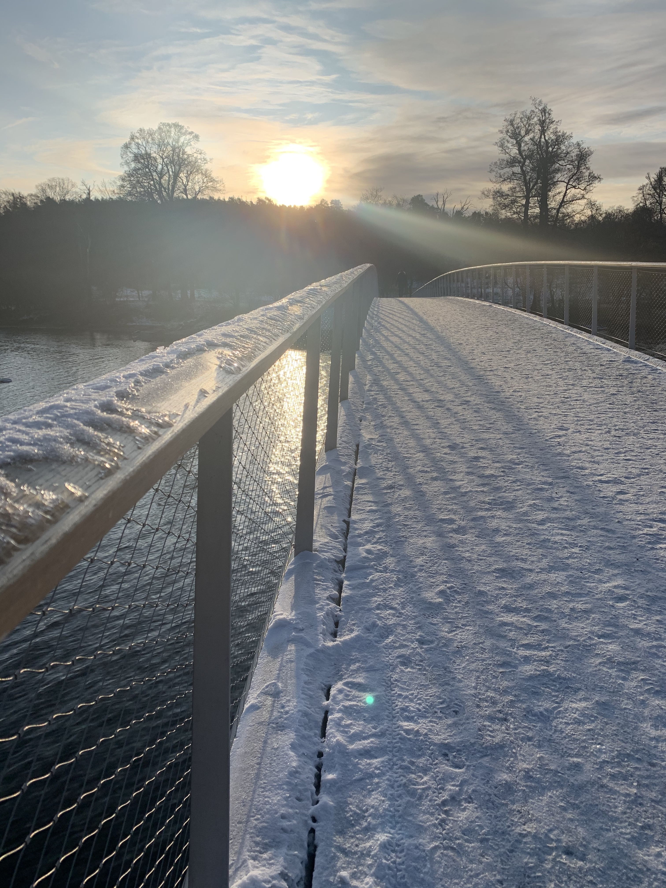

We just moved to Stockholm 2 months ago and are still learning about Sweden and things to to around or near town.
So far, we have enjoyed exploring the local parks and wondering around the city.
But we would love to learn what your favourite places are and add them to our Sweden budget list!